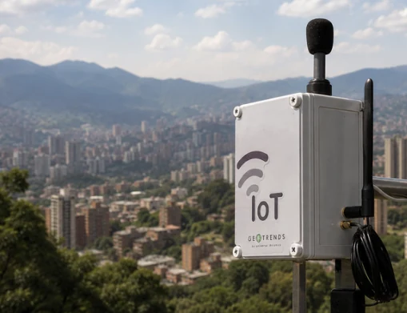
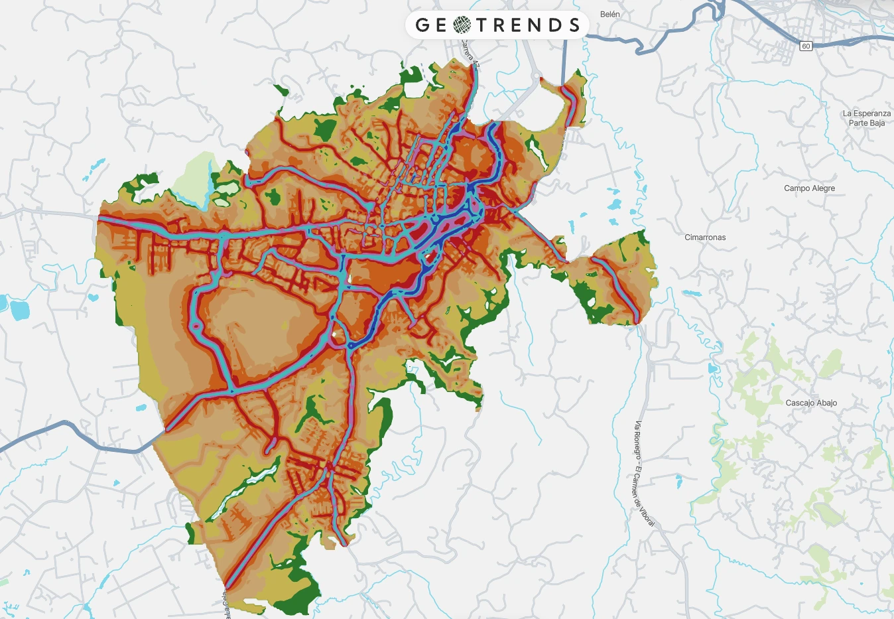
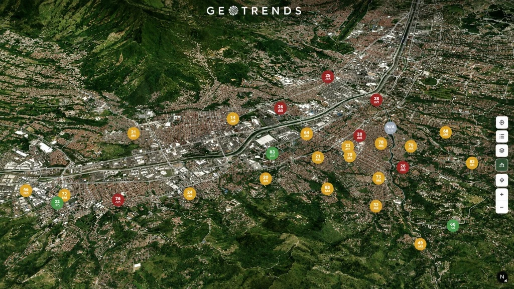
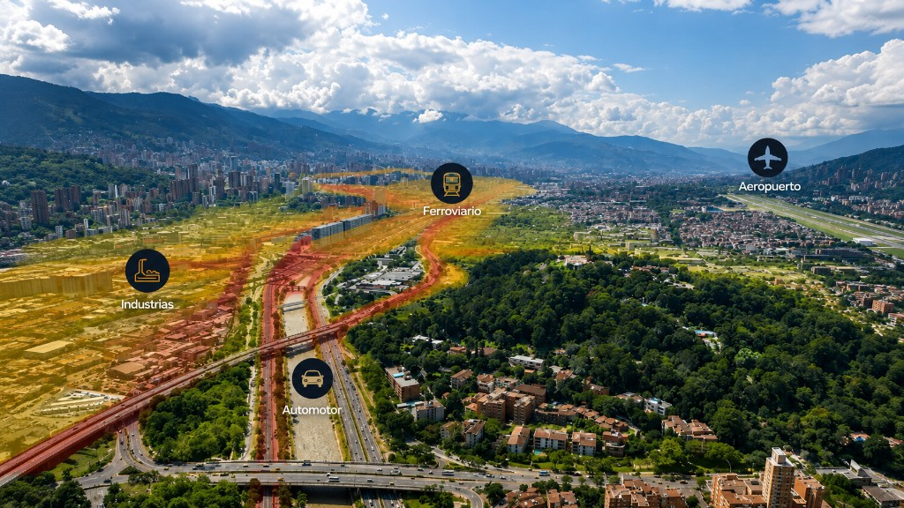
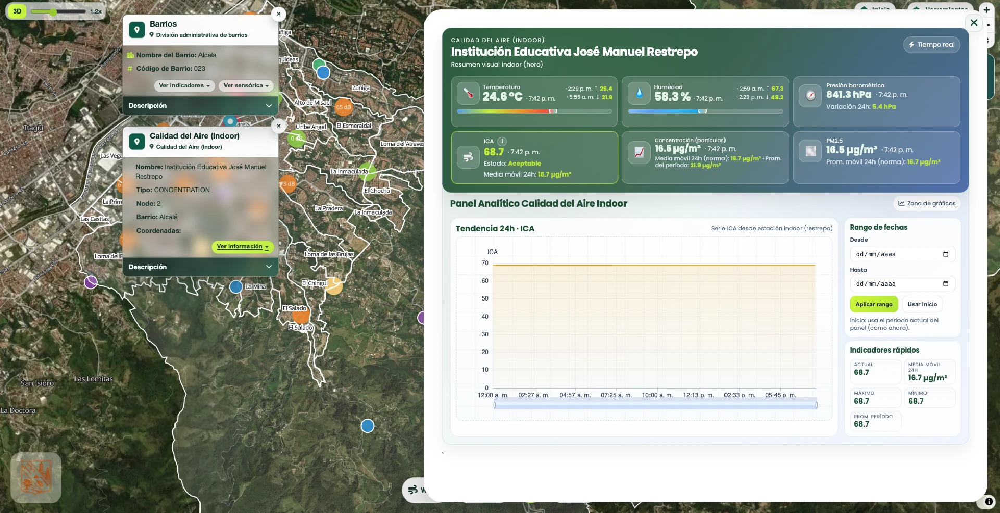

IoT
Implementamos redes inteligentes de monitoreo acústico basadas en sensores IoT que permiten medir, analizar y visualizar en tiempo real la condición sonora del territorio. Nuestros sistemas generan indicadores acústicos avanzados y series temporales que soportan la gestión institucional, la evaluación de políticas públicas y la toma de decisiones basadas en datos para mejorar la calidad acústica de las ciudades.
Ver proyectos
Mapas de ruido
Desarrollamos mapas de ruido estratégicos utilizando modelación acústica avanzada y herramientas geoinformáticas que permiten identificar las fuentes dominantes de contaminación sonora, estimar niveles de exposición de la población y priorizar medidas de mitigación. Estos mapas se integran con instrumentos de planificación territorial y soportan procesos regulatorios y de gestión ambiental urbana.
Ver proyectos
Ecosistemas WEBGIS
Diseñamos ecosistemas digitales basados en plataformas WebGIS que integran múltiples fuentes de información territorial, sensores IoT y bases de datos ambientales en entornos interactivos de análisis y visualización. Nuestras plataformas permiten ingerir, procesar y analizar información georreferenciada para el monitoreo de variables ambientales, la generación de indicadores dinámicos y la visualización de capas cartográficas en tiempo real. Nuestros ecosistemas facilitan la trazabilidad de datos, el análisis espacial avanzado y la toma de decisiones estratégicas para la gestión ambiental, la planificación territorial y el fortalecimiento de capacidades institucionales.
Ver proyectos
Planes de descontaminación acústica
Formulamos planes de descontaminación acústica bajo un enfoque integral que articula diagnóstico técnico, priorización territorial y estrategias de intervención a corto, mediano y largo plazo. Nuestros planes incorporan herramientas analíticas y tecnológicas que facilitan la coordinación institucional, la trazabilidad de las acciones y la incorporación del ruido dentro de la planificación ambiental del territorio.
Ver proyectos
Analítica geoespacial
Aplicamos analítica geoespacial avanzada para integrar, procesar y analizar grandes volúmenes de información territorial proveniente de sensores, sistemas IoT, bases de datos geográficas y múltiples fuentes ambientales y urbanas. Mediante técnicas de análisis espacial, modelación de datos y visualización cartográfica, transformamos información georreferenciada en indicadores estratégicos que permiten identificar patrones territoriales, comprender dinámicas espaciales complejas y soportar la toma de decisiones en planificación urbana, gestión ambiental, infraestructura y desarrollo territorial.
Ver proyectos